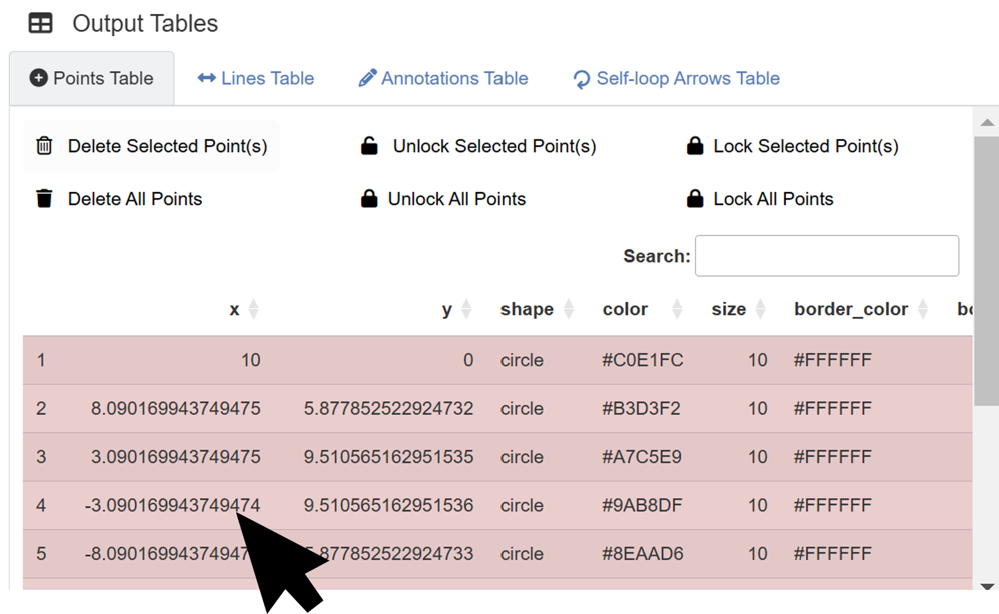
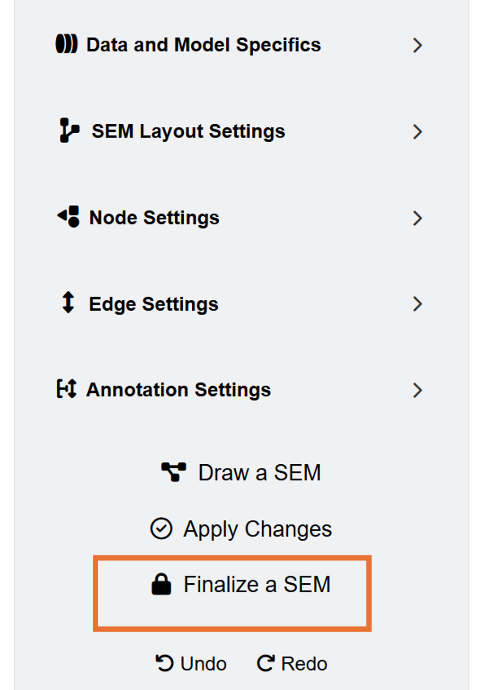

In this chapter, I will briefly discuss some features of ggsem that are worth pointing out.
Output Tables Can Be Directly Edited

The output tables can be edited with a mouse click. If you want to change the X and Y coordinates using the output tables directly, click a specific row, and type in the input. Then, the app will re-render the final plot with modified coordinates of the element immediately.
For colors, only hex codes are allowed rather than color names. If you input an incorrect code, it will automatically default to having a black color.
Alpha values and gradient position can only range from 0 to 1. These columns won’t accept character inputs.
Do not worry if you make mistakes. The output tables will automatically default to certain settings instead if inappropriate inputs are provided.
Aesthetic Grouping Through Lock/Unlock

Lock/Unlock mechanisms are useful to modify multiple elements at once. These can be applied to all classes of elements: points, lines, annotations and self-loop arrows.
Unlocked elements can be edited via the Apply Changes button.
You can manually select which elements to lock or unlock using the output tables.
Aesthetic Grouping of SEM Diagram

Elements generated from SEM Data are automatically
grouped together through the lavaan column (set to
TRUE). This means if you add another element separately
(ex. circle point), the layout settings from SEM Data
will not affect the separately generated element.
If you press the Finalize a SEM button, the inputs
from the SEM Data menu will not affect the aesthetics
of the SEM diagram because the app no longer recognizes as a SEM diagram
(lavaan column set to FALSE).
Through this mechanism, you can generate multiple SEM diagrams in sequence. Generate a SEM diagram, modify its aesthetics, then finalize it. Then generate another SEM diagram, modify it, etc.
Aesthetic Grouping of Network Diagram

Elements generated from Network Data are also
automatically grouped through the network column (set to
TRUE). If you press the Finalize a Network
button, the inputs from the Network Data menu will not
affect the aesthetics of the network diagram because the app no longer
recognizes as a network diagram (network column set to
FALSE).
Through this mechanism, you can create several network diagrams in sequence. Generate a network diagram, modify its aesthetics, then finalize it. Then generate another network diagram, modify it, etc.